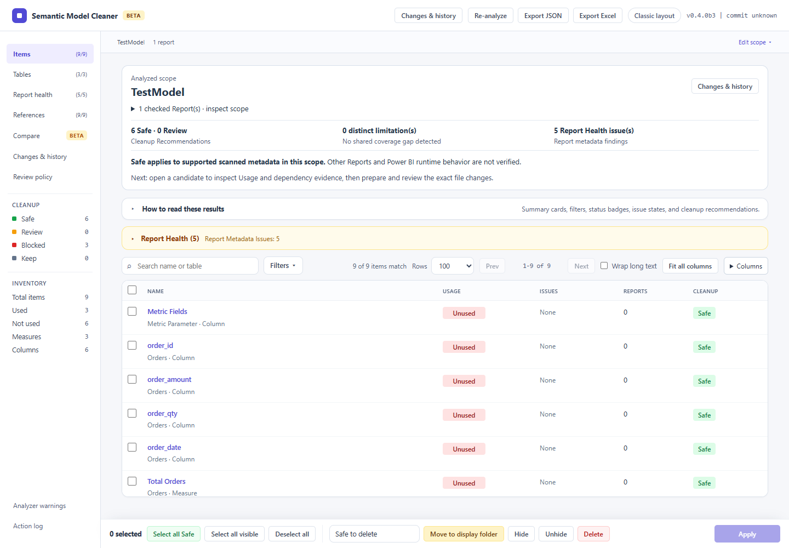
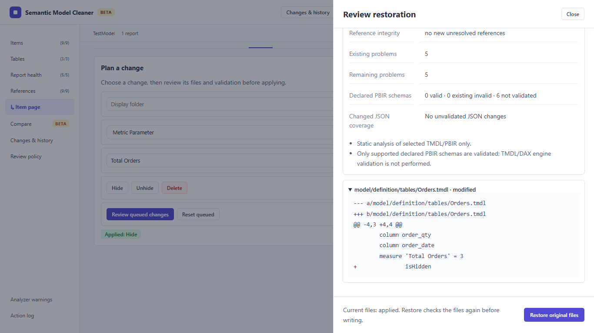

Public beta ZIP
Windows 0.4.0b7
Download the versioned ZIP and its SHA-256 sidecar. Extract the complete ZIP, then launch the unsigned .exe.
Semantic Model Cleaner scans one .SemanticModel against one or more .Report folders,
shows supported usage evidence and lets you review exact cleanup changes. Conclusions cover only the selected scope.
Download the versioned ZIP and its SHA-256 sidecar. Extract the complete ZIP, then launch the unsigned .exe.
The public release is a beta. Evaluate it on disposable copies. Beta4 adds file protection, clearer scope and reviewed recovery.
Open v0.4.0b7 prereleaseDevelopers can git clone and python -m pip install . to keep working in terminal/VS Code. The repo still contains CLI/web entry points for contributors.
This is a public beta, not a stable release. Review supported inputs and validation limits before using a beta.
Open release historyUse this if you want to test early-access flows and give feedback before they graduate. Beta builds surface prerelease UI clearly and may change faster.
Open v0.4.0b7 prereleaseIf you prefer source installs, the repository still supports the CLI and local web app for contributors and technical users.
Read the setup guideThe Windows app shows the analyzed scope, evidence and exact differences before a change or restoration.


Inputs: a TMDL Semantic Model and connected PBIR Reports. A PBIX file must first be saved as a Power BI Project with those text formats. Quick start · Supported workflows · CLI and AI automation
The tool is intentionally scoped to one semantic model against one or more reports, so the cleanup context stays understandable.
Warnings stay visible when the analyzer finds ambiguous patterns or unsupported metadata. You keep control instead of pretending the result is certain.
Review results in the web UI, export JSON or Excel, and review exact file differences before applying. Changes & history provides file verification and guarded restoration of original bytes.
The packaged Windows download is the main user path for non-terminal users, while source install remains available for contributors.
Code, issues, release notes, and prereleases live in GitHub. This site exists to make the entry point clearer, not to replace the repo.
No. It is a focused local utility for analysis and cleanup review around PBIR and TMDL projects.
Yes. The CLI and local web app remain supported for source users and contributors.
Use a disposable copy for evaluation. Safe means no supported scanned metadata requires the item in the selected scope; Power BI runtime behavior is not verified by static analysis.